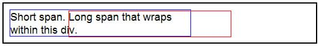

The HTMLElement.offsetLeft read-only property returns the number of pixels that the upper left corner of the current element is offset to the left within the {{domxref("HTMLElement.offsetParent")}} node.
For block-level elements, offsetTop, offsetLeft, offsetWidth, and offsetHeight describe the border box of an element relative to the offsetParent.
However, for inline-level elements (such as span) that can wrap from one line to the next, offsetTop and offsetLeft describe the positions of the first border box (use {{domxref("Element.getClientRects()")}} to get its width and height), while offsetWidth and offsetHeight describe the dimensions of the bounding border box (use {{domxref("Element.getBoundingClientRect()")}} to get its position). Therefore, a box with the left, top, width and height of offsetLeft, offsetTop, offsetWidth and offsetHeight will not be a bounding box for a span with wrapped text.
left = element.offsetLeft;
left is an integer representing the offset to the left in pixels from the closest relatively positioned parent element.
var colorTable = document.getElementById("t1");
var tOLeft = colorTable.offsetLeft;
if (tOLeft > 5) {
// large left offset: do something here
}
This example shows a 'long' sentence that wraps within a div with a blue border, and a red box that one might think should describe the boundaries of the span.

<div style="width: 300px; border-color:blue; border-style:solid; border-width:1;">
<span>Short span. </span>
<span id="longspan">Long span that wraps within this div.</span>
</div>
<div id="box" style="position: absolute; border-color: red; border-width: 1; border-style: solid; z-index: 10">
</div>
<script type="text/javascript">
var box = document.getElementById("box");
var longspan = document.getElementById("longspan");
box.style.left = longspan.offsetLeft + document.body.scrollLeft + "px";
box.style.top = longspan.offsetTop + document.body.scrollTop + "px";
box.style.width = longspan.offsetWidth + "px";
box.style.height = longspan.offsetHeight + "px";
</script>
{{Compat}}